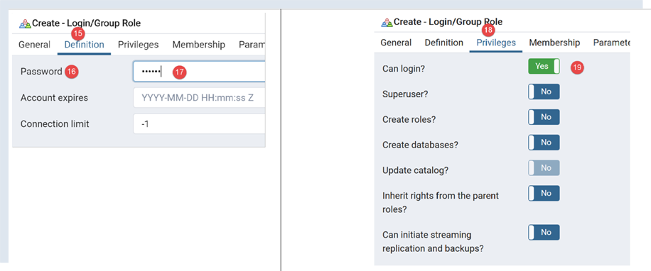
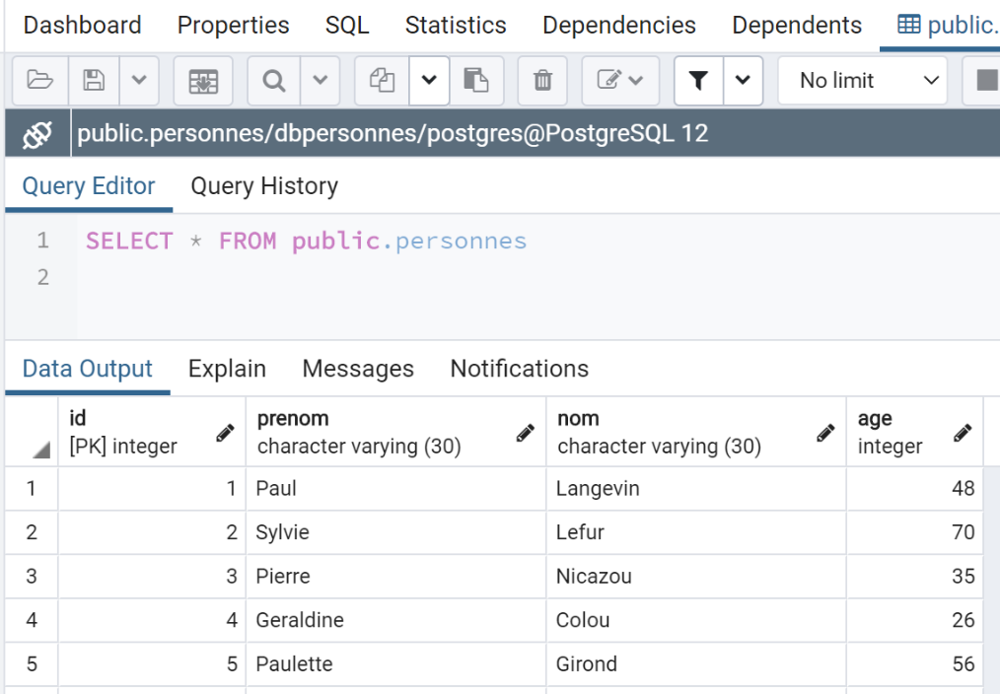

17. Using SGBD PostgreSQL
SGBD PostgreSQL is freely available. It is an alternative to the version 'community' version of MySQL.
We are using it here to demonstrate that it is fairly simple to migrate Python scripts / MySQL to Python scripts / PostgreSQL.
With SGBD MySQL, the architecture of our scripts was as follows:

With SGBD and PostgreSQL, it will be as follows:

17.1. Installation of the SGBD and PostgreSQL
The SGBD and PostgreSQL distributions are available in the URL and [https://www.postgresql.org/download/] (May 2019). We demonstrate the installation of version for 64-bit Windows:


- In [1-4], download the installer for SGBD;
Run the downloaded installer:

- In [6], specify an installation folder;

- In [8], option and [Stack Builder] are unnecessary for what we want to do here;
- In [10], leave the value that is displayed;

- In [12-13], we have entered the password [root] here. This will be the administrator password for SGBD, which is called [postgres]. PostgreSQL also refers to it as the superuser;
- in [15], leave the default value: this is the listening port for SGBD;

- In [17], leave the default value;
- in [19], the installation configuration summary;


On Windows, SGBD PostgreSQL is installed as a Windows service that starts automatically. Most of the time, this is not desirable. We will modify this configuration. Type [services] into the Windows search bar:

- In [29], we can see that the SGBD PostgreSQL service is set to automatic mode. We change this by accessing the properties of the [30] service:

- In [31-32], set the startup type to manual;
- In [33], stop the service;
When you want to manually start SGBD, return to the [services] application, right-click on the [postgresql] service (34), and start it (35).
17.2. Manage PostgreSQL using the [pgAdmin] tool
Start the SGBD Windows service (see previous paragraph). Then, in the same way you started the [services] tool, launch the [pgadmin] tool, which allows you to manage the SGBD, PostgreSQL, and [1-3]:

You may be prompted for the superuser password at some point. The superuser is named [postgres]. You set this password during the installation of SGBD. In this document, we assigned the password [root] to the superuser during installation.
- In [4], [pgAdmin] is a web application;
- in [5], the list of PostgreSQL servers detected by [pgAdmin], here 1;
- in [6], the PostgreSQL server that we launched;
- in [7], the databases of SGBD, here 1;
- in [8], the database [postgresql] is managed by the superuser [postgres];
First, let’s create a user [admpersonnes] with the password [nobody]:


- In [17], we entered [nobody];

- in [21], the code SQL that the tool [pgAdmin] will send to SGBD PostgreSQL. This is a way to learn the SQL language, which is proprietary to PostgreSQL;
- In [22], after validation by the [Save] wizard, the user [admpersonnes] was created;
Now we create the database [dbpersonnes]:

Right-click on [23], then [24-25] to create a new database. In the [26] tab, we define the database name as [27] and its owner as [admpersonnes] [28].

- in [30], the database creation code SQL;
- in [31], after validation by the [Save] wizard, the database [dbpersonnes] is created;
We will use the [dbpersonnes] database with Python scripts.
17.3. Installation of the Python connector for SGBD PostgreSQL
The diagram above shows a connector linking the Python scripts to SGBD and PostgreSQL. There are several of these. We are installing the [psycopg2] connector. This is done in a Python terminal (regardless of the folder in which the terminal is open). The connector is installed using the [pip install psycopg2] command:
(venv) C:\Data\st-2020\dev\python\cours-2020\python3-flask-2020\troiscouches\v01\tests>pip install psycopg2
Collecting psycopg2
Downloading psycopg2-2.8.5-cp38-cp38-win_amd64.whl (1.1 MB)
|| 1.1 MB 3.2 MB/s
Installing collected packages: psycopg2
Successfully installed psycopg2-2.8.5
17.4. Porting scripts MySQL to scripts PostgreSQL

- The [1] folder of the MySQL scripts is duplicated (Ctrl-C / Ctrl-V), then the file names are changed but not their contents;
17.4.1. module [pgres_module]
This module is a copy of the [mysql_module] module (see section |script [mysql-04]: execution of a SQL command file|). The imports are changed:
Instead of:
# imports
from mysql.connector import DatabaseError, InterfaceError
from mysql.connector.connection import MySQLConnection
from mysql.connector.cursor import MySQLCursor
we write:
# imports
from psycopg2 import DatabaseError, InterfaceError
from psycopg2.extensions import connection, cursor
The signature of the function [afficher_infos] was:
def afficher_infos(curseur: MySQLCursor):
It becomes:
def afficher_infos(curseur: cursor)
The signature of the function [execute_list_of_commands] was:
def execute_list_of_commands(connexion: MySQLConnection, sql_commands: list,
suivi: bool = False, arrêt: bool = True, with_transaction: bool = True)
It becomes:
def execute_list_of_commands(connexion: connection, sql_commands: list,
suivi: bool = False, arrêt: bool = True, with_transaction: bool = True):
Otherwise, nothing else changes.
17.4.2. script [pgres_01]
The script [pgres_01] is a copy of the script [mysql_01] (see section |script [mysql-01]: connecting to a database MySQL - 1|). The following changes are made:
Instead of:
# import module mysql.connector
from mysql.connector import connect, DatabaseError, InterfaceError
write:
# import of the psycopg2 module
from psycopg2 import connect, DatabaseError, InterfaceError
The rest remains unchanged. The results are the same as with MySQL.
17.4.3. script [pgres_02]
The script [pgres_02] is a copy of the script [mysql_02] (see section |script [mysql-02]: connection to a database MySQL - 2|). The following changes are made:
Instead of:
# import module mysql.connector
from mysql.connector import DatabaseError, InterfaceError, connect
write:
# import of the psycopg2 module
from psycopg2 import DatabaseError, InterfaceError, connect
The results are not the same as those from the [mysql_02] script:
The [pgres_02] script is as follows:
# import module mysql.connector
from psycopg2 import DatabaseError, InterfaceError, connect
# ---------------------------------------------------------------------------------
def connexion(host: str, database: str, login: str, pwd: str):
# connects then disconnects (login,pwd) from the [database] server [host]
# throws DatabaseError exception if problem occurs
connexion = None
try:
# connection
connexion = connect(host=host, user=login, password=pwd, database=database)
print(
f"Connexion réussie à la base database={database}, host={host} sous l'identité user={login}, passwd={pwd}")
finally:
# close the connection if it has been opened
if connexion:
connexion.close()
print("Déconnexion réussie\n")
# ---------------------------------------------- main
# login credentials
USER = "admpersonnes"
PASSWD = "nobody"
HOST = "localhost"
DATABASE = "dbpersonnes"
# existing user login
try:
connexion(host=HOST, login=USER, pwd=PASSWD, database=DATABASE)
except (InterfaceError, DatabaseError) as erreur:
# error is displayed
print(erreur)
# non-existent user login
try:
connexion(host=HOST, login="xx", pwd="yy", database=DATABASE)
except (InterfaceError, DatabaseError) as erreur:
# error is displayed
print(erreur)
While lines 36–41 should have displayed an error message indicating that the connection to SGBD failed, nothing is displayed. In fact, upon further investigation, we see that the code does indeed pass through the [except] in lines 35–37, but the variable [erreur] is set to [None]. This occurs with version 2.8.4 of the [psycopg2] connector.
This issue can be worked around by writing a generic but less precise message:
# non-existent user login
try:
connexion(host=HOST, login="xx", pwd="yy", database=DATABASE)
except (InterfaceError, DatabaseError) as erreur:
# error is displayed
print(f"Erreur de connexion à la base [{DATABASE}] par l'utilisateur [xx/yy]")
The results are as follows:
17.4.4. script [pgres_03]
The script [pgres_03] is a copy of the script [mysql_03] (see section |script [mysql-03]: creating a table MySQL|). The following changes are made:
Instead of:
from mysql.connector import DatabaseError, InterfaceError, connect
from mysql.connector.connection import MySQLConnection
write:
from psycopg2 import DatabaseError, InterfaceError, connect
from psycopg2.extensions import connection
Additionally, the signature of the [execute_sql] function, which was:
def execute_sql(connexion: MySQLConnection, update: str):
becomes:
def execute_sql(connexion: connection, update: str):
The rest remains unchanged. The result is as follows:
C:\Data\st-2020\dev\python\cours-2020\python3-flask-2020\venv\Scripts\python.exe C:/Data/st-2020/dev/python/cours-2020/python3-flask-2020/databases/postgresql/pgres_03.py
create table personnes (id int PRIMARY KEY, prenom varchar(30) NOT NULL, nom varchar(30) NOT NULL, age integer NOT NULL, unique(nom,prenom)) : requête réussie
Process finished with exit code 0
You can verify the existence of the [personnes] table using the [pgAdmin] administration tool:

17.4.5. script [pgres_04]
The script [pgres_04] is a copy of the script [mysql_04] (see section |script [mysql-04]: executing a command file SQL|). It uses the [pgres_module] module:
# retrieve application configuration
import config_04
config = config_04.configure()
# syspath is configured - imports can be made
import sys
from pgres_module import execute_file_of_commands
from psycopg2 import connect, DatabaseError, InterfaceError
The rest remains unchanged.
We create a configuration named [pgres pgres-04 without_transaction] as described in the section |script [mysql-04]: executing a command file SQL|. We also create a configuration named [pgres pgres-04 with_transaction].
Executing the [pgres pgres-04 without_transaction] configuration yields the following results:
C:\Data\st-2020\dev\python\cours-2020\python3-flask-2020\venv\Scripts\python.exe C:/Data/st-2020/dev/python/cours-2020/python3-flask-2020/databases/postgresql/pgres_04.py false
--------------------------------------------------------------------
Exécution du fichier SQL C:\Data\st-2020\dev\python\cours-2020\python3-flask-2020\databases\postgresql/data/commandes.sql sans transaction
--------------------------------------------------------------------
[drop table if exists personnes] : Exécution réussie
nombre de lignes modifiées : -1
[create table personnes (id int primary key, prenom varchar(30) not null, nom varchar(30) not null, age integer not null, unique (nom,prenom))] : Exécution réussie
nombre de lignes modifiées : -1
[insert into personnes(id, prenom, nom, age) values(1, 'Paul','Langevin',48)] : Successful execution
nombre de lignes modifiées : 1
[insert into personnes(id, prenom, nom, age) values (2, 'Sylvie','Lefur',70)] : Successful execution
nombre de lignes modifiées : 1
[select prenom, nom, age from personnes] : Exécution réussie
prenom, nom, age,
*****************
('Paul', 'Langevin', 48)
('Sylvie', 'Lefur', 70)
*****************
xx : Erreur (ERREUR: erreur de syntaxe sur ou près de « xx »
LINE 1: xx
^
)
[insert into personnes(id, prenom, nom, age) values (3, 'Pierre','Nicazou',35)] : Successful execution
nombre de lignes modifiées : 1
[insert into personnes(id, prenom, nom, age) values (4, 'Geraldine','Colou',26)] : Successful execution
nombre de lignes modifiées : 1
[insert into personnes(id, prenom, nom, age) values (5, 'Paulette','Girond',56)] : Successful execution
nombre de lignes modifiées : 1
[select prenom, nom, age from personnes] : Exécution réussie
prenom, nom, age,
*****************
('Paul', 'Langevin', 48)
('Sylvie', 'Lefur', 70)
('Pierre', 'Nicazou', 35)
('Geraldine', 'Colou', 26)
('Paulette', 'Girond', 56)
*****************
[select nom,prenom from personnes order by nom asc, prenom desc] : Exécution réussie
nom, prenom,
************
('Colou', 'Geraldine')
('Girond', 'Paulette')
('Langevin', 'Paul')
('Lefur', 'Sylvie')
('Nicazou', 'Pierre')
************
[select nom,prenom,age from personnes where age between 20 and 40 order by age desc, nom asc, prenom asc] : Exécution réussie
nom, prenom, age,
*****************
('Nicazou', 'Pierre', 35)
('Colou', 'Geraldine', 26)
*****************
[insert into personnes(id, prenom, nom, age) values(6, 'Josette','Bruneau',46)]: Successful execution
nombre de lignes modifiées : 1
[update personnes set age=47 where nom='Bruneau'] : Successful execution
nombre de lignes modifiées : 1
[select nom,prenom,age from personnes where nom='Bruneau'] : Successful execution
nom, prenom, age,
*****************
('Bruneau', 'Josette', 47)
*****************
[delete from personnes where nom='Bruneau'] : Successful execution
nombre de lignes modifiées : 1
[select nom,prenom,age from personnes where nom='Bruneau'] : Successful execution
nom, prenom, age,
*****************
*****************
--------------------------------------------------------------------
Exécution terminée
--------------------------------------------------------------------
Il y a eu 1 erreur(s)
xx : Erreur (ERREUR: erreur de syntaxe sur ou près de « xx »
LINE 1: xx
^
)
Process finished with exit code 0
- Line 5: The command to delete the table [personnes] had to be modified. Unlike the connector for MySQL, the connector for PostgreSQL throws an exception if the table to be deleted does not exist. The command [drop table] has a variant, [drop table if exists], which does not throw an exception if the table does not exist. We used it here. This is an example where two SGBD commands do not behave the same way in similar situations;
The table [personnes] in the tool [pgAdmin] is as follows:

Running the [pgres pgres_04 with_transaction] configuration yields the following results:
C:\Data\st-2020\dev\python\cours-2020\python3-flask-2020\venv\Scripts\python.exe C:/Data/st-2020/dev/python/cours-2020/python3-flask-2020/databases/postgresql/pgres_04.py true
--------------------------------------------------------------------
Exécution du fichier SQL C:\Data\st-2020\dev\python\cours-2020\python3-flask-2020\databases\postgresql/data/commandes.sql avec transaction
--------------------------------------------------------------------
[drop table if exists personnes] : Exécution réussie
nombre de lignes modifiées : -1
[create table personnes (id int primary key, prenom varchar(30) not null, nom varchar(30) not null, age integer not null, unique (nom,prenom))] : Exécution réussie
nombre de lignes modifiées : -1
[insert into personnes(id, prenom, nom, age) values(1, 'Paul','Langevin',48)] : Successful execution
nombre de lignes modifiées : 1
[insert into personnes(id, prenom, nom, age) values (2, 'Sylvie','Lefur',70)] : Successful execution
nombre de lignes modifiées : 1
[select prenom, nom, age from personnes] : Exécution réussie
prenom, nom, age,
*****************
('Paul', 'Langevin', 48)
('Sylvie', 'Lefur', 70)
*****************
xx : Erreur (ERREUR: erreur de syntaxe sur ou près de « xx »
LINE 1: xx
^
)
--------------------------------------------------------------------
Exécution terminée
--------------------------------------------------------------------
Il y a eu 1 erreur(s)
xx : Erreur (ERREUR: erreur de syntaxe sur ou près de « xx »
LINE 1: xx
^
)
Process finished with exit code 0
The table [personnes] in the tool [pgAdmin] is as follows:

Here, the result differs from that obtained with MySQL. If the scripts are run under the same conditions—i.e., after running the script without a transaction—the following results are obtained:
- with MySQL, the table [personnes] is empty;
- with PostgreSQL, the table [personnes] is not empty;
The difference lies in the different ways these two SGBD commands roll back the transaction:
- MySQL does not roll back the orders [drop table] and [create table]. We end up with an empty table [personnes];
- PostgreSQL rolls back orders [drop table] and [create table]. The table is restored to the state it was in before the script was executed with a transaction;
17.4.6. script [pgres_05]
The script [pgres_05] is a copy of the script [mysql_05] (see section |script [mysql-05]: use of parameterized queries|). The script is modified as follows:
Instead of:
# imports
from mysql.connector import connect, DatabaseError, InterfaceError
We write:
# imports
from psycopg2 import connect, DatabaseError, InterfaceError
The rest remains unchanged.
The results obtained in [pgAdmin] are as follows:

17.5. Conclusion
Porting the MySQL scripts to PostgreSQL scripts was relatively straightforward. This is an exception. The two SGBD versions do not support the same naming conventions for SQL objects (databases, tables, columns, constraints, data types…), and have incompatible SQL extensions… To ensure a simple port, you must stick to the SQL standard in both cases without attempting to use the proprietary extensions of SGBD. This comes at the expense of performance.